如何用hexo搭建自己的博客及美化自己的博客
这是我配好环境使用hexo写的第一篇博客
这里特别感谢各位大佬们的支持与帮助ε≡٩(๑>₃<)۶
配置相关环境
要想创建自己的hexo博客需要配置相关的环境（我前几次就经常把环境搞炸），接下来开始配置创建博客所必须的环境
过程来源: Gaein nidb，Code Sheep.
相关视频链接: https://www.bilibili.com/video/BV1Yb411a7ty?from=search&seid=4666682153927695444
安装Node.js
可以去https://www.nodejs.org 网址下载

选择左边LTS(长期支持版)下载，安装时无脑下一步即可
安装完成之后会有两个组件，如图所示

可以顺带检查一下它们俩的版本，按下键盘的win + R键，在弹出面板输入cmd，打开dos命令窗口。

输入 npm -v 和 code -v

我们需要利用npm安装镜像包，但是因为国内的下载速度比较慢，所以我们需要下载一个cnpm淘宝的源
在dos命令窗口中输入
1 | npm install -g cnpm --registry=https://registry.npm.taobao.org |
如果安装成功，可以在dos命令窗口输入cnpm检查一下
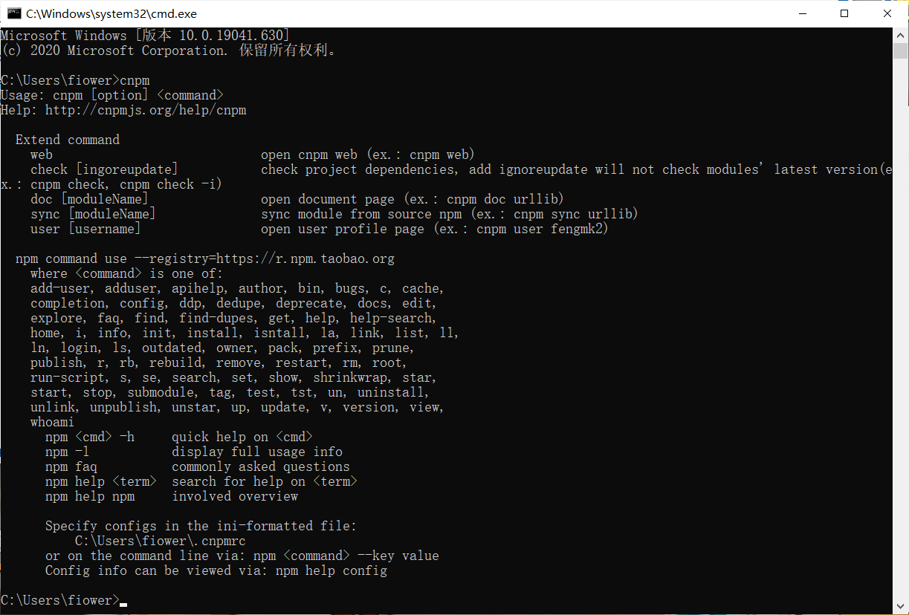
然后使用cnpm安装hexo框架
在dos命令窗口输入cnpm install -g hexo-cli
如果安装成功，可以在dos命令窗口输入hexo -v检查一下
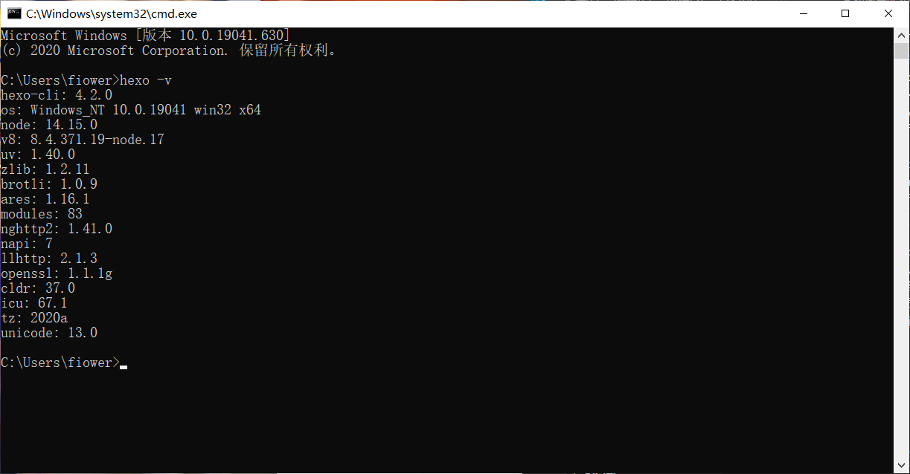
那么你的环境已经配置好了，我们来正式搭建hexo博客
在本地创建hexo的博客
首先我们需要一个存放你博客的文件夹，所以第一步我们需要新建一个文件夹。
举个栗子:C:\Users\fiower\Documents\blog这是我的文件夹路径
我们终于可以创建自己的博客了(๑╹◡╹)ﾉ”””
由于本人没有用过powershell（菜），所以接下来我们使用dos命令窗口(git bash）创建本地博客
只需要两种方法选一即可(这里以dos命令窗口为例，git bash和dos命令窗口的指令是完全一样的，搭建时没必要纠结使用哪个)
使用dos命令窗口
按下键盘的win + R键，在弹出面板输入cmd，打开dos命令窗口。
这时路径默认是C:\Users\你的用户名字>
输入cd 你的博客所在路径 转入你的博客路径

使用git bash
在你的博客文件夹下按下右键，点击git bash

开始创建本地博客
输入hexo init并按下回车等待


这时你的目标文件夹就会多出一些文件
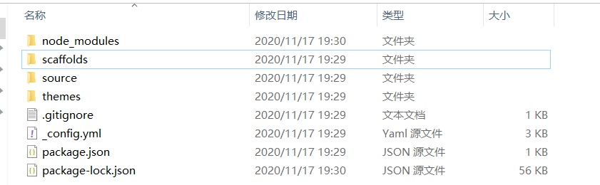
那么恭喜你，现在hexo博客已经配置完毕了（bushi
继续在dos命令窗口输入hexo s并按下回车等待
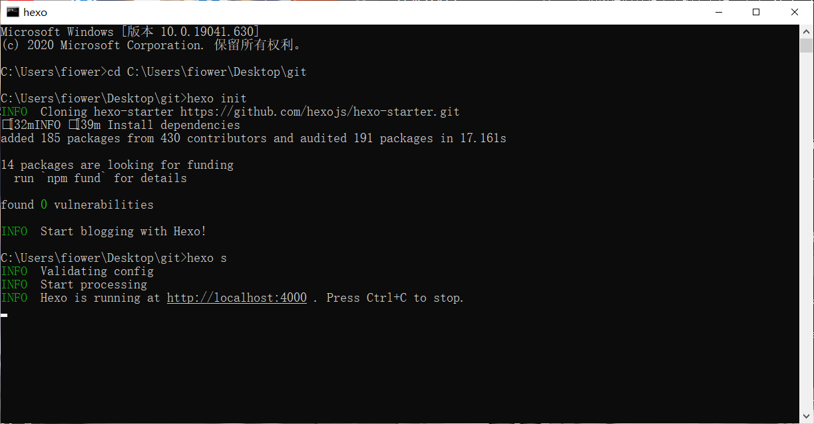
如图所示，这时候出现了一个4000端口的网址
让我们在浏览器内打开这个网址
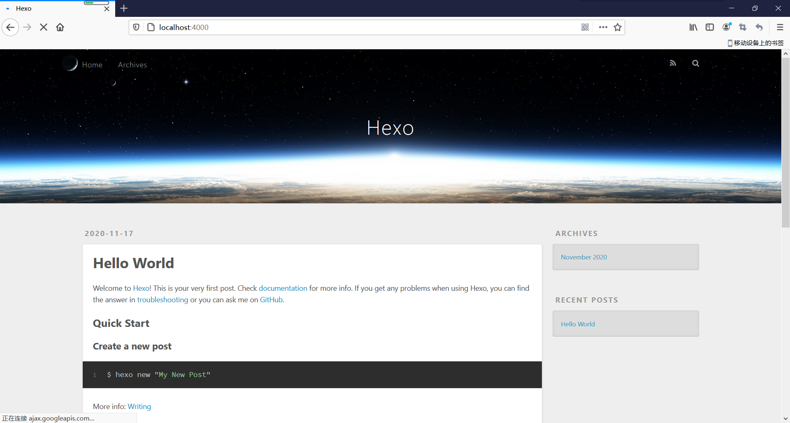
我们的第一个本地博客就搭建好了
但是你的程序还在运行着，这时候需要在dos窗口/git bash窗口中按下Ctrl + C键即可中断本地网址的建立（hexo s以后会用于博客写入新东西时的调试工作）

如果你没有成功到达这一步，不用害怕，只需要把你创建的文件夹**干掉重来**即可，多试试几次总会成功的
将hexo博客同步到远端(Github)
我相信你已经非常兴奋而且想要把你的博客让朋友们看到，别急，现在我们就把自己的博客部署到远端
接下来我们要把自己的博客部署到Github上(毫无疑问需要你的账号，没有的小伙伴需注册)
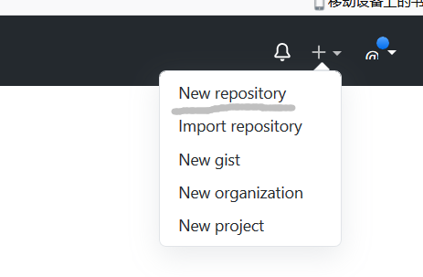
新建一个仓库
\注意，用户部署个人博客的Github仓库的命名必须符合特定要求**
\必须是”你的Github的昵称.github.io”**
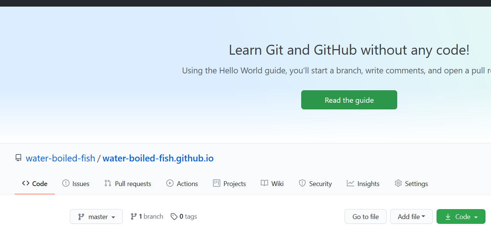
建立了空仓库之后，我们需要装一个插件
在命令行中输入
1 | npm install --save hexo-deployer-git |

然后用vscode打开你的blog的根目录_config.yml文件(没有安装vscode的话也可以选择记事本打开)

由于我没有新建空仓库，放一张CodeSheep的图片(这样获取你部署到远端的网址)

然后在dos命令窗口输入hexo d
这样你的hexo博客就部署到了远端(所有人都可以用这个网址访问你的博客了)
美化自己的hexo博客
首先你需要下载一个博客的主题(如果你认为你的博客默认主题已经非常好看的了请忽略我说的话)
我们以ad主题为例
你需要先找见ad主题在github的网址，以便把这个主题克隆到自己的文件夹里面
ad主题地址:https://github.com/dongyuanxin/theme-ad
然后我们需要在命令行中输入git clone https://github.com/dongyuanxin/theme-ad.git themes/ad
这样就能把ad的主题文件克隆到你的themes文件夹里面了
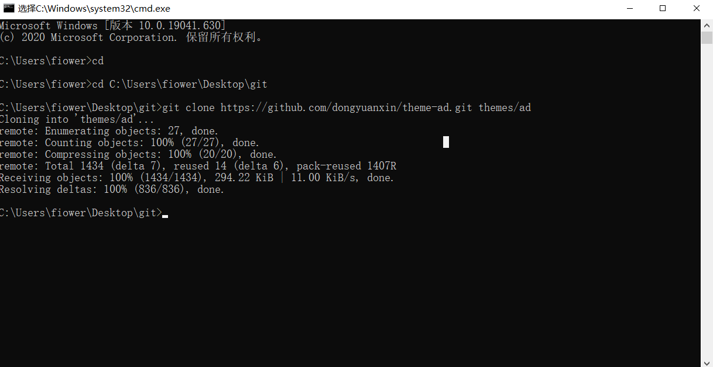
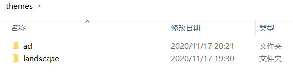
用vscode打开你的blog的根目录_config.yml文件，修改themes: landscape为themes: ad
然后保存退出
在命令行输入hexo s进行调试，打开4000端口
(因为我没图片了就找我现在的充个数ヾ(ｏ･ω･)ﾉ)

然后输入hexo clean清楚临时缓存的文件，输入hexo d部署到远端
这样我们的主题就修改好了
如何修改博客上的一些内容
这里的内容指的是超链接，修改博客文字内容等操作，可以使你的博客更加个性化(也许(っ•̀ω•́)っ✎⁾⁾)
相信你已经发现了，blog的根目录_config.yml文件很重要，打开发现有很多设置的东西
其实你themes目录下的主题也有_config.yml文件，只要你打开它，我相信你就会知道怎么使用它了(确信)
如何在文章中加入超链接
你可以使用Typora来写文章，可以直接使用超链接的格式，当然也可以用其他的软件来写(比如记事本)
格式:[你想写的内容]+(你想加入的链接)
这是基于markdown语法的格式，markdown格式的参考网址可以参考我在下文放出的链接
如何写文章及在写文章时加入图片
我们只需在命令行输入hexo new “文章标题”就可以创建一个空文件夹了，然后可以打开改.md文件进行写入内容

那么问题来了，如何才能写出像我一样带有图片的文章呢？
我们需要再下载一个插件
我们需要打开git bash(dos也可以)输入
1 | npm install hexo-asset-image --save |
然后打开hexo的配置文件_config.yml
找到 post_asset_folder，把这个选项从false改成true
这样我们每次新建的文章都会带有一个同名的文件夹(原来的文件可以直接新建同名文件夹食用)

由于hexo文章是基于markdown语法写的，我们需要如何用markdown语法插入图片
参考网址:https://www.runoob.com/markdown/md-tutorial.html
格式:比如我这篇文章就是这样写的:
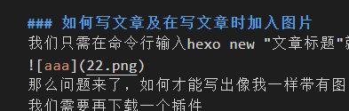
这样就可以在文章中间加入图片了qwq
如何写文章及在写文章时加入音乐播放器
我相信有些人喜欢和我一样在博客中加入音乐播放器(显得有13格)，所以和我一起在自己的博客中加入这个好玩的东西吧
由于是我自学的如何插入，本文只能简单的进行插入工作(菜)
我接下来展示如何在ad主题下添加网易云音乐播放器
首先我们打开网页版网易云，选择一首你喜欢的歌曲
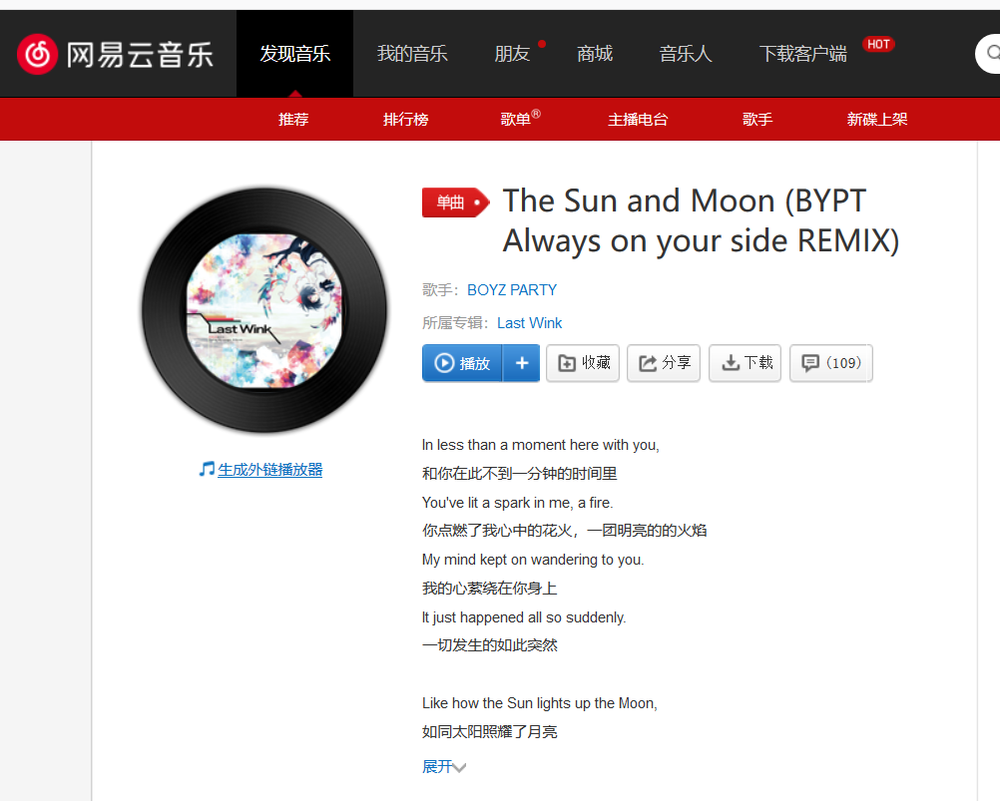
点击”生成外链播放器”
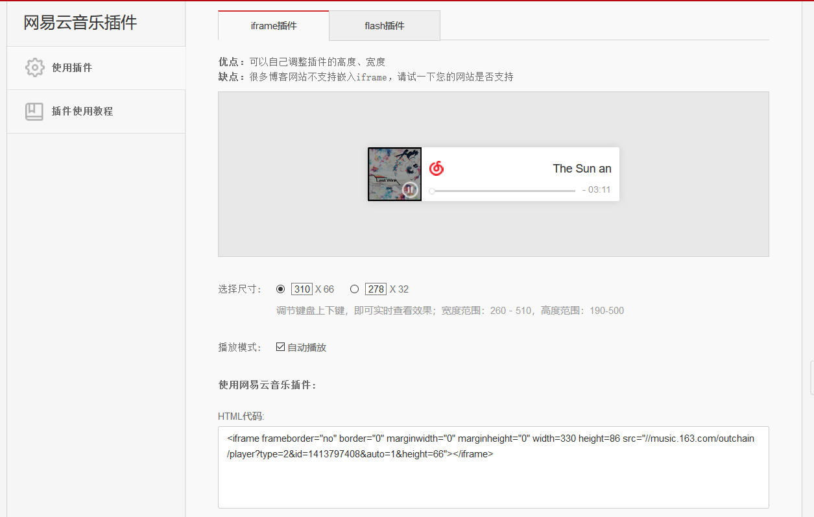
复制这个HTML代码
然后打开路径 themes\ad\layout\partials下的head.ejs文件
(选择head是为了让播放器放到博客的左上角，当然我们也可以选择这个文件夹的任意文件进行修改)
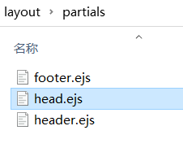
加入这段代码
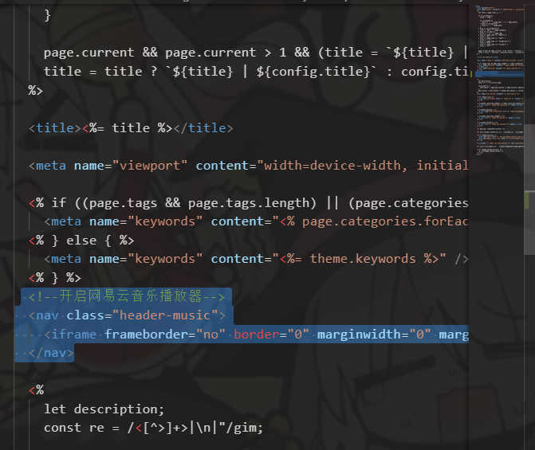
这样播放器就可以部署到你的博客里面了，但是我们还需要调一下css样式
打开路径 themes\ad\source\css
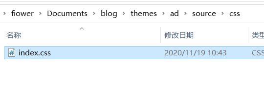
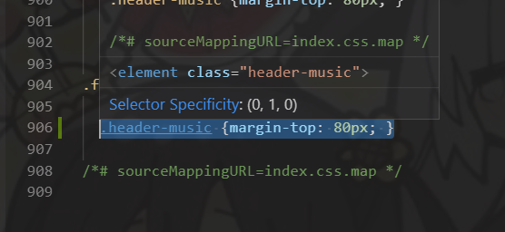
.header-music {margin-top: 80px; }
这样我们的播放器就可以部署到博客上了
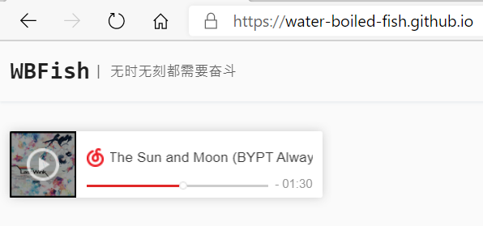
如何写文章及在写文章时加入音乐播放器(升级版）
由于我看了隔壁学长farewell的博客发现他的播放器和我上面配置的不一样(我的太菜了)
所以我决定我也要搞一个，但是这个过程并不顺利。。。经过我艰苦卓绝的努力，终于找到一个教程，现在用我的方法呈现出来
原文链接 https://www.cnblogs.com/fby698/p/12663089.html
Aplayer官网文档：https://aplayer.js.org/#/
Metingjs官网文档：https://github.com/metowolf/MetingJS
| 选项 | 默认 | 描述 |
| ————————— | ———– | ———————————————————— |
| server(平台) | require | 音乐平台：netease，tencent，kugou，xiami，baidu |
| id(编号) | require | 歌曲ID /播放列表ID /专辑ID /搜索关键字 |
| auto（支持类种 类） | options | 音乐链接，支持：netease，tencent，xiami |
| type（类型） | require | song，playlist，album，search，artist |
| fixed（固定模式） | false | 启用固定模式，默认false |
| mini（迷你模式） | false | 启用迷你模式,默认false |
| autoplay（自动播放） | false | 音频自动播放，默认false |
| theme(主题颜色) | #2980b9 | 默认#2980b9 |
| loop（循环） | all | 播放器循环播放，值：“all”，one”，“none” |
| order(顺序) | list | 播放器播放顺序，值：“list”，“random” |
| preload(加载) | auto | 值：“none”，“metadata”，“’auto” |
| volume（声量） | 0.7 | 默认音量，请注意播放器会记住用户设置，用户自己设置音量后默认音量将不起作用 |
| mutex（限制） | true | 防止同时播放多个玩家，在该玩家开始播放时暂停其他玩家 |
| lrc-type（歌词） | 0 | 歌词显示 |
| list-folded（列表折叠） | false | 指示列表是否应该首先折叠 |
| list-max-height（最大高度） | 340px | 列出最大高度 |
| storage-name（储存名称） | metingjs | 存储播放器设置的localStorage键 |
然后在你博客的适当位置加入以下代码
1 | <!-- 引用Aplayer和metingjs --> |
**适当位置**指的是你博客的主界面的文件中的位置，举个栗子
选择themes\ad\layout\partials\footer.ejs(因为我使用的ad主题，所以这里以ad主题为例，若使用其他主题，只需要点开对应主题的.ejs文件)
然后在适当位置加入代码(该代码在文件中的位置直接对应到播放器在你的博客页面的位置)
比如我的就是在这里加的
需要注意的是，你这样拷贝的是我的播放器列表(当然用我的歌单我将感激不尽)，我相信你肯定想拥有一个属于自己的播放列表
这里就拿网易云音乐举例，仔细看上面的代码
1 | data-id="706800324" |
我相信你如果仔细看过上面的表格的话一定知道我想表达什么了(可能)
你首先需要选择你需要播放的音乐平台，比如你想使用网易云，就在data-serve后面输入netease，你想使用qq音乐，就在data-serve后面输入tencent，以此类推。。。
不管你是哪个平台的忠实听众，你的每个歌单都有属于它自己的id，你需要的是把这个id找到然后cv到你的data-id上
接下来让我们看看这么才能找到你歌单的id
首先打开网页版的网易云音乐，然后登陆，找到自己的歌单
看见最上方链接的那一串数字了没？那就是我们想要的东西
赶快cv一下，然后粘贴替换掉上面我的id(悲)
然后你的这段代码就是你自己的了，赶快hexo s试一试
该播放器的更多使用方法在上方表格内都写出来了，如果看见代码里面没有的但是表格中确实有使用方法的，可以手动添加，在代码末端加入
1 | data-选项名称(英文)=“ ” |
这样达到你需要的目的，其他选项可以自行修改，更多使用方法请自行尝试(因为那些也就改几个字的事情，没必要教)
emmmmm其实有的主题在主题对应的_config.yml文件中就已经配置好了
如何在博客中加入live_2d看板娘
因为我还没有学过HTML的用法，所以我只能部署一个比较简单的live_2d看板娘
在命令行输入
1 | npm install --save hexo-helper-live2d |
安装
但是这个live2d的插件真的一言难尽 (我和学长一致认为这个live2d插件自带的人物很少(且不对我xp)且不能自行添加)
安装截图我就不放了，毕竟能看到这里的都安装过不下10次了吧(
安装好了之后就可以去下载live2d文件了(其实你也可以边等边下载的)
下载地址:
1 | https://github.com/EYHN/hexo-helper-live2d/blob/master/README.zh-CN.md |
下载的文件是文件夹格式的，我们需要把它们移到（）文件路径中
然后你还需要再次修改根目录中的_config.yml文件，修改代码
1 | live2d: |
原文章代码
1 | live2d: |
如图所示
（）
然后你就可以在命令行中输入hexo s来进行本地调试了
选择一个你喜欢的live_2d吧ヾ(๑╹◡╹)ﾉ”
未完待续
若没有本文 Issue，您可以使用 Comment 模版新建。
GitHub Issues